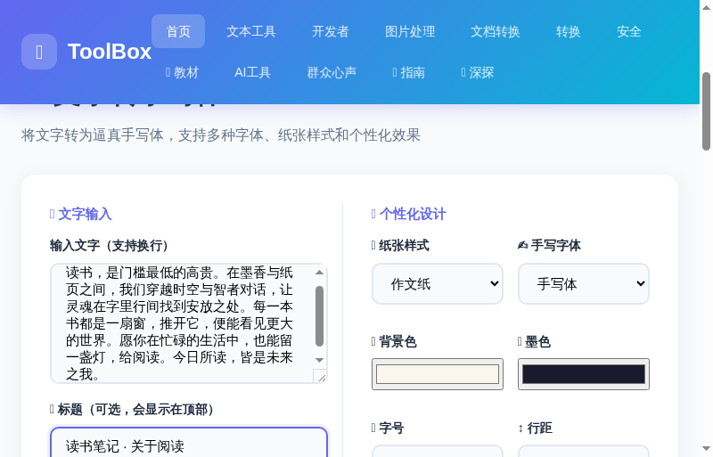
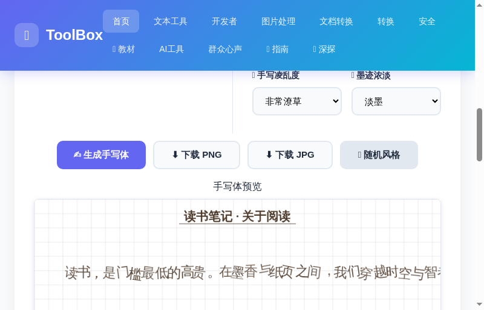

文字转手写体：3步生成逼真的手写笔记
你有没有这样的时刻：一篇读书笔记抄到一半想偷懒，一份手写作业差几行字，或者想给远方的朋友写一封"有温度"的信，却发现自己打键盘比握笔快得多？
文字转手写体 就是为这一刻准备的。把你要的文字粘贴进去，选一种手写字体、挑一张顺眼的纸张，一键就能生成一张逼真的手写笔记图片。8 种手写字体（楷体、行书、草书、手写体、仿宋、隶书、轻松手写、儿童体）× 8 种纸张样式（信纸、方格、作文纸、田字格、拼音格、英文四线格、复古信纸……），还能调节字的凌乱度、墨色浓淡和行距——每一张都像真人手写，而不是打印出来的。
全程在浏览器里完成，不需要安装任何软件，不用注册，完全免费。
打开工具，输入文字
进入 ToolBox 首页，点击「图片处理」分类，找到「文字转手写体」工具卡片；或者直接点击下方按钮快速进入。
在「📝 文字输入」区域粘贴或输入你的内容，支持换行，每行一个自然段。还可以在「📌 标题」里填一个简短标题，它会显示在手写笔记的顶部，像真的笔记开头一样。
选择纸张样式和手写字体
这是决定"像不像手写"的关键一步。「🎨 个性化设计」面板里提供了丰富的组合：
📄 8 种纸张样式
| 纸张 | 特点 | 适用场景 |
|---|---|---|
| 纯色背景 | 干净整洁，无格子 | 便签、语录分享 |
| 米黄信纸（横线） | 经典信纸质感 | 书信、日记 |
| 方格纸 | 规整的方格 | 草稿、演算、笔记 |
| 作文纸 | 作文方格，最像手写作业 | 作文、作业、手抄报 |
| 田字格 | 米字格，练字格 | 练字、低年级作业 |
| 拼音格 | 带拼音行线 | 小朋友拼音练习 |
| 英文四线格 | 四线三格，英文书写 | 英文抄写、单词本 |
| 复古信纸 | 做旧泛黄，双层边框 | 复古风、文艺分享 🔥 |
✍️ 8 种手写字体
楷体（标准）、行书、草书、手写体、仿宋、隶书、轻松手写、儿童体。其中「手写体」「轻松手写」「儿童体」最有手写的松弛感，配合适度的凌乱度效果更真实。
下面这张截图展示了「作文纸 + 手写体」的效果——文字已经输入，标题写好，个性化选项都已就位：

微调个性化，一键生成
除了纸张和字体，工具还提供了 7 个"真人感"调节旋钮：
- 🎨 背景色 / 🖊️ 墨色：直接改纸张底色和字迹颜色
- 📏 字号：特小 / 小 / 中 / 大 / 特大
- ↕️ 行距：紧凑 → 特宽，共 5 档
- ↔️ 字间距：紧凑 / 标准 / 偏宽 / 宽松
- 📐 纸张宽度：窄 600px / 标准 800px / 宽 1000px
- 🔀 手写凌乱度：工整 → 非常潦草，越乱越像真人 🔥
- 💧 墨迹浓淡：正常 → 极淡（铅笔感）
点击「✍️ 生成手写体」，笔记立刻渲染出来。生成结果如下图所示：


下载 PNG / JPG 图片
生成满意后，点击「⬇️ 下载 PNG」或「⬇️ 下载 JPG」按钮，图片会自动保存到你的电脑。PNG 画质更清晰、体积更大，适合分享和打印；JPG 体积更小，适合发微信、朋友圈。
下载的图片是高清位图，直接可用于打印、配图或发布到社交平台。
🎯 手写体的 5 个实用场景
❓ 常见问题
Q：生成的手写体会一模一样吗？
不会。每次生成都会引入随机的字间距、旋转和墨色变化，同一段文字生成两次，结果是不同的——这正是"手写感"的来源。
Q：可以商用吗？
可以。工具本身不限制用途，生成的图片归你所有，可用于自媒体配图、设计素材等。
Q：PNG 和 JPG 有什么区别？
PNG 无损、画质更清晰，适合打印和保存；JPG 有损压缩、体积更小，适合微信、朋友圈、短视频配图。
Q：能导出透明背景吗？
手写体基于纸张渲染，默认带纸张背景。想要透明底，可以选择「纯色背景」并把背景色与你的使用场景底色调成一致（例如白色页面用 #ffffff）。
📌 还没试过？现在就去生成一张属于自己的手写笔记吧
✍️ 去生成手写体 →